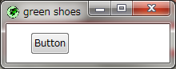

The Green Shoes Manual 1.0.335
Button
ボタン（Button）は、ご存知のとおり、押しボタンです。それらをクリックしたら何かを行います。 ボタンは"OK"または"Are you sure?"などを表示します。そして、よければボタンをクリックします。 
Shoes.app do
button "OK!"
button "Are you sure?"
end
上記の例のボタンはそれらがクリックされたときに何も行いません。 働きを行わせるためには、それぞれのボタンにブロックを取り付けます。
Shoes.app do
button "OK!" do
append { para "Well okay then." }
end
button "Are you sure?" do
append { para "Your confidence is inspiring." }
end
end
このようにボタンにブロックを取り付けました。 それぞれのブロックはページに新しいパラグラフを取り付けます。 クリックする度に、パラグラフが追加されます。
これはこれ以上深くはしません。ボタンはクリック可能な句でしかありません。
厳密に言えば、次に続く例では他の方法でそれを書いています。
Shoes.app do
@b1 = button "OK!"
@b1.click{para "Well okay then."}
@b2 = button "Are you sure?"
@b2.click{para "Your confidence is inspiring."}
end
見た目は劇的に違いますが、これは同じ動きです。 １つ目の違い：直接ブロックをボタンに取り付けるのではなく、clickメソッドを通して、 ブロックを後で取り付けています。
２つ目の違いはボタンには全く関係がありません。Green Shoesがスロットに要素を直接 追加することを許しているので、appendブロックが取り除かれています。 そのため直接paraを呼ぶことができます。（prepend、beforeまたは afterメソッドの場合にはできません。）
以下のメソッドに加えて、ボタンはCommonのすべてのメソッドも継承します。
click() { |self| ... } » self
ボタンがクリックされたときには、clickブロックが呼ばれます。 このブロックはselfを渡します。意味すること：どちらのボタンでクリックされたか。
focus() » self
ボタンのフォーカスを移動します。 そのボタンはハイライトされ、ユーザがエンターキーを打てば、クリックされます。
Next: Check